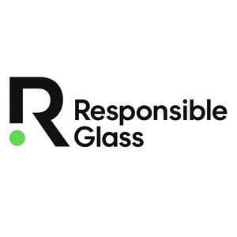

Trade Mark Journal No.2025/050 12 December 2025
UK00004301255 26 November 2025 (1,9,12,17,19,21,35,41,42)

- Class 1
- Sodium bicarbonate; ammonium bicarbonate; bicarbonate of soda for chemical purposes; calcined soda; soda ash; caustic soda; caustic soda in the nature of sodium hydroxide; caustic soda for industrial purposes; water glass, namely, sodium silicate dissolved in water; chemical additives for use as opacifiers for glass.
- Class 9
- Downloadable software for individuals, businesses, and other organisations to monitor environmental trends and track progress towards sustainability targets.
- Class 12
- Vehicle windows made of glass; windows for vehicle windshields.
- Class 17
- Acrylic glass, semi-processed; glass fiber filtering materials; glass fibre filtering materials; glass fibres for insulation; glass wool for insulation; organic glass, semi-processed; semi-processed acrylic glass; epoxy resin-impregnated glass fibre tapes for insulation; foam glass for use as an insulating material for buildings; glass fiber insulation materials for use in construction; organic glass being semi-processed thermosetting resins; substrates primarily of glass for insulation of light emitting diodes; thermal insulation and fire protection materials being fire resistant composite panels made of glass fibers.
- Class 19
- Glass panes for building; window glass, for building; building glass; glass for building; roofing, not of metal, incorporating photovoltaic cells; glass powder for use in building; glass powder for use as a partial replacement of Portland cement in cement mixes; foam glass for building.
- Class 21
- Common sheet glass, not for building; decorative glass, not for building; unworked or semi- worked glass, except building glass; decorative glass, not for building; tempered glass, not for building; mosaics of glass, not for building; laminated flat glass, not for building; common sheet glass, not for building; figured plate glass, not for building; modified sheet glass, not for building; semi-worked sheets of glass, not for building; glass receptables, namely, glass tableware, serving and baking dishes; glass vases; ornamental glass figurines, boxes or dishes; glass bottles; perfume bottles; glass decanters, jars, beakers; glass containers for food and non-food items; glass containers for household or kitchen use; glass pots; glass bowls; glass plates; unworked glass, not for building; glass rods; glass dishes; drinking glasses.
- Class 35
- Organising and conducting volunteer programmes and community service projects for sustainable industrial practices. Promoting the commercial and business interests of professionals in the glass manufacturing industry, provided by an association for its members.
- Class 41
- Association services including training and education for members in the field of sustainable glass manufacturing; educational services relating to good practices for environmental and social standards; training on compliance with Environmental Social Governance principles in the glass industry; publication of non-downloadable online materials and documents on sustainability standards; organising and conducting conferences, seminars, webinars, and public campaigns to promote awareness of responsible glass production and Environmental Social Governance compliance.
- Class 42
- Testing and certification services for compliance with quality and industry standards; analysis and evaluation of materials and industrial processes; advisory services on quality assurance and material testing; association services for the quality control of goods and services provided by members; industrial testing, inspection, and research; product analysis, testing, and evaluation; provision of testing and laboratory facilities; accreditation and consultancy in quality assurance; setting of quality standards; information services relating to quality standards; research and development of sustainable products; environmental sustainability consultancy; provision of technical information relating to industrial analysis, research, and environmental standards; quality control testing and consultancy in environmental compliance for glass manufacturing.
RESPONSIBLEGLASS LTD
Representative: RightPro IP & Legal Consultancy Ltd.